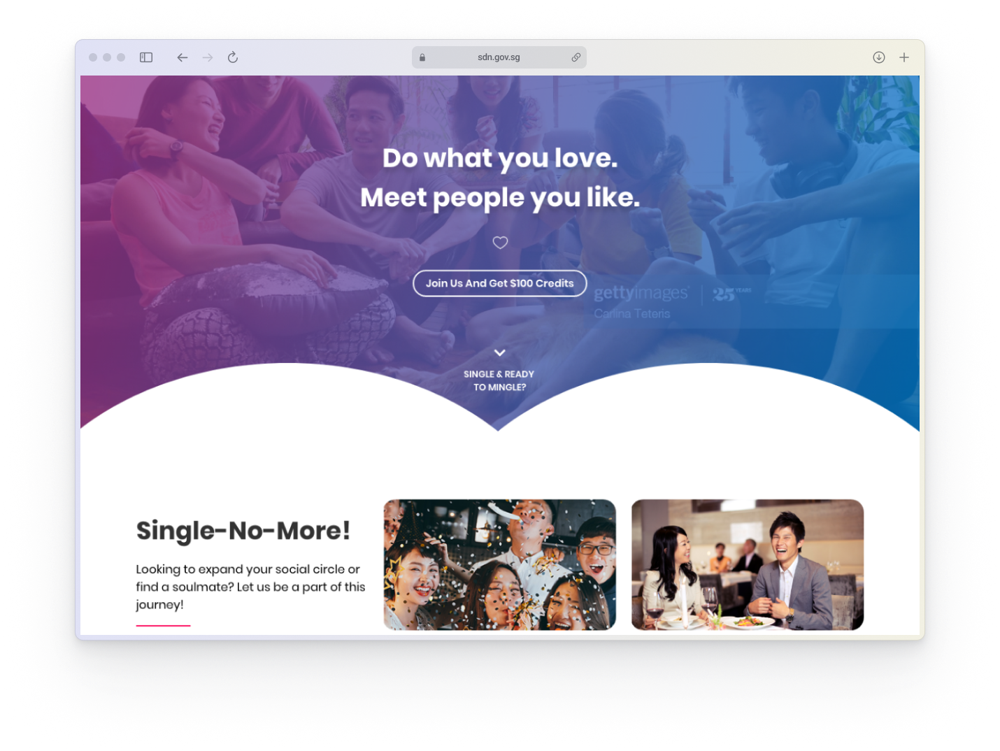

05
Social Development Network Redesign
Contrary to common belief, Government websites can indeed be aesthetically pleasing. There exist various strategies to redesign them while maintaining compliance with DSS standards. I present my approach to the Social Development Network (SDN).
 10 mins read
10 mins read
